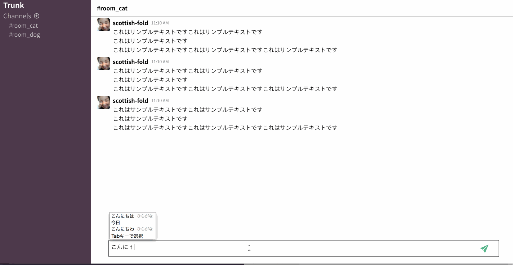

モダンWebフロントエンド実践入門 〜カルーセル実装〜
***
Agenda
- トレーニング概要
- 自己紹介
- JavaScriptの基礎文法
- モダンWebフロントエンド開発
- カルーセルハンズオン
モダンWebフロントエンド環境でカルーセル実装を行おう！

WHAT I'M ABOUT
株式会社TRUNK TL Kawasaki Atsushi
2013年じげんグループHRメディア事業のPMやバックエンドを担当。
新規事業立ち上げの経験を経てエンジニアリングユニットのマネージャーに従事。
2015年に株式会社カヤックへ入社。
クライアントワークや自社サービス(Lobi)のフロントエンド、バックエンドおよびインフラ設計、構築、運用を担当。
JavaScriptとは
JavaScriptはウェブブラウザ、Node.jsを始め、今はIoT（Internet of Things）デバイスなど幅広い環境で動作する言語となっています。
HTMLはマークアップ言語で、これを使ってウェブコンテンツに構造と意味を与えます。 例えば段落や見出しや表を定義したり、ページに画像や動画を入れたりします。
CSSは HTML コンテンツに適用するスタイリング規則の言語です。 例えば背景とフォントの色を設定したり、複数カラムにコンテンツをレイアウトしたりします。
JavaScriptは動的にコンテンツを更新したり、マルチメディアを管理したり、その他多くのことができるスクリプト言語です。
コメント
コメントはプログラムとして評価されないため、ソースコードの説明を書くために利用されています。
JavaScriptには大きく分けて2種類のコメントがあります。
一行コメント
// 一行コメント
// この部分は評価されない
複数行コメント
/* 複数行コメント
囲まれている範囲が評価されない
*/
変数と宣言
プログラミング言語には、数値などのデータに名前を付けたり繰り返し利用するために、データを保持するための変数があります。
JavaScriptでは、「これは変数です」という宣言をするキーワードとして、 var、let、constがあります。
let
letキーワードを使い、現在のスコープに対して変数宣言できます。
let bookTitle = "JavaScriptの本";
let x; // "x"を定義する
let x; // 同じ"x"を定義するとSyntaxErrorとなる
const
基本的な使い方はletと同じですが、constは再代入できない変数を定義するキーワードです。
const bookTitle = "JavaScriptの本";
bookTitle = "上書き"; // TypeError: invalid assignment to const `bookTitle'
データ型とリテラル
JavaScriptは動的型付け言語に分類される言語であるため、 静的型付け言語のような変数の型はありません。
しかし、文字列、数値、真偽値といった値の型は存在します。 これらの値の型のことをデータ型とよびます。
データ型を大きく分けると、プリミティブ型とオブジェクトの2つに分類されます。
プリミティブ型（基本型）
- 真偽値（Boolean）: trueまたはfalseのデータ型
- 数値（Number）: 42 や 3.14159 などの数値のデータ型
- 文字列（String）: "JavaScript" などの文字列のデータ型
- undefined: 値が未定義であることを意味するデータ型
- null: 値が存在しないnull値を意味するデータ型
- シンボル（Symbol）: ES2015から追加された一意で不変な値のデータ型
オブジェクト（複合型）
- プリミティブ型以外のデータ
- オブジェクト、配列、関数、正規表現、Dateなど
typeof true;// => "boolean"
typeof 42; // => "number"
typeof "JavaScript"; // => "string"
typeof Symbol("シンボル");// => "symbol"
typeof undefined; // => "undefined"
typeof null; // => "object"
typeof ["配列"]; // => "object"
typeof { "key": "value" }; // => "object"
typeof function() {}; // => "function"
関数と宣言
JavaScriptでは、処理をまとめる際に関数やメソッド、クラスを使います。 これらは関数オブジェクトと言われる関数として使えるオブジェクトの一種です。
// 関数定義
function 関数名(仮引数1, 仮引数2) {
// 関数を呼び出された時の処理
// ...
return 関数が返す値;
}
// 関数呼び出し
関数名(引数1, 引数2);
function multiple(num) {
return num * 2;
}
console.log(multiple(10)); // => 20
条件分岐
if文を使うことで、プログラム内に条件分岐を書くことができます。
if文は次のような構文が基本形となり、条件式の評価結果がtrueであるならば、 実行する文が実行されます。
if (条件式) {
// 実行する文;
// 実行する文;
}
else if文
複数の条件分岐を書く場合は、if文に続けてelse if文を使うことでできます。 たとえば、次の3つの条件分岐するプログラムを考えます。
- version が "ES5" ならば "ECMAScript 5" と出力
- version が "ES6" ならば "ECMAScript 2015" と出力
- version が "ES7" ならば "ECMAScript 2016" と出力
const version = "ES6";
if (version === "ES5") {
console.log("ECMAScript 5");
} else if (version === "ES6") {
console.log("ECMAScript 2015");
} else if (version === "ES7") {
console.log("ECMAScript 2016");
}
今年がうるう年かを判定してみましょう
うるう年の条件は次のとおりです。
- 西暦で示した年が4で割り切れる年はうるう年です
- ただし、西暦で示した年が100で割り切れる年はうるう年ではありません
- ただし、西暦で示した年が400で割り切れる年はうるう年です
// 今年の西暦を取得
const year = new Date().getFullYear();
if (year % 4 === 0) { // 4で割り切れる
// 100で割り切れる年はうるう年ではない
// ただし、400で割り切れる年はうるう年
} else {
console.log("うるう年ではありません");
}
ループと反復処理
プログラミングにおいて、同じ処理を繰り返すために同じコードを書く必要はありません。 ループや再帰呼び出し、イテレータなどを使い、反復処理は抽象化します。 ここでは、もっとも基本的な反復処理と制御文について学んでいきます。
while文
while文は条件式がtrueであるならば、反復処理を行います。
while文の実行フローは次のようになります。 最初から条件式がfalseである場合は、何も実行せずwhile文は終了します。
- 条件式 の評価結果がtrueなら処理を続け、falseなら終了
- 実行する文を実行
- ステップ1へ戻る
例
次のコードではxの値が10未満であるなら、コンソールへ繰り返しログが出力されます。 また、実行する文にて、xの値を増やし条件式がfalseとなるようにしています。
let x = 0;
while (x < 10) {
console.log(x);
x += 1;
}
FizzBuzz問題をやってみよう
FizzBuzzの条件は次のとおりです。
- 1 ~ 100 までをループする
- 3で割り切れる場合はFizzを出力
- 5で割り切れる場合はBuzzを出力
- 3と5で割り切れる場合はFizzBuzzを出力
- それ以外は数値を出力
let i = 1;
while (i <= 100) {
if (i%3 == 0) {
console.log("Fizz")
} else {
console.log(i)
}
}
Vue.jsインスタンスの生成
new Vue({
// Vue.jsとDOMの関連付け
el: "#app",
// データ
data: {
message: "Hello"
}
},
// ライフサイクルフック
created: function() {
console.log("created!!")
}
},
// メソッドの定義
methods: {
say: function(msg) {
alert("Hello" + msg)
}
}
},
})
Vue.jsを触ってみよう
- Hello World! となっている部分を Hello Vue!に変更してみよう
- 入力されている文字数が20文字以上になったら `alert('not more than 20')` とアラートを表示しよう
See the Pen Vue.js Sample Form by pickrusu (@pickrusu) on CodePen.
Vue.jsの裏側
ライフサイクル

仮想DOM
Vue.jsはDOMとJavaScriptのデータを同期するためにリアクティブなデータバインディングを持っている
データの変更後に仮想DOMに反映され、仮想DOMと実際のDOMの差分を計算して変更部分を実際のDOMに反映し、Viewが変更される

実装ステップ
- Vueインスタンスの生成
- スレッドをモックデータに置き換え
- 入力データの反映
- コンポーネント化
Vueのインスタンスの生成
全ての Vue アプリケーション は、Vue 関数で新しい Vue インスタンスを作成することによって始まる
var vm = new Vue({
// オプション
})
スレッドをモックデータに置き換え
const messages = [
{
name: 'scottish-fold',
time: '11:10 AM',
icon: 'images/pickrusu.jpg',
text: 'これはサンプルテキストですこれはサンプルテキストです\nこれはサンプルテキストです\nこれはサンプルテキストですこれはサンプルテキストですこれはサンプルテキストです',
},
{
name: 'scottish-fold',
time: '11:10 AM',
icon: 'images/pickrusu.jpg',
text: 'これはサンプルテキストですこれはサンプルテキストです\nこれはサンプルテキストです\nこれはサンプルテキストですこれはサンプルテキストですこれはサンプルテキストです',
},
{
name: 'scottish-fold',
time: '11:10 AM',
icon: 'images/pickrusu.jpg',
text: 'これはサンプルテキストですこれはサンプルテキストです\nこれはサンプルテキストです\nこれはサンプルテキストですこれはサンプルテキストですこれはサンプルテキストです',
}
]
コンポーネント化
単一ファイルコンポーネント
コンポーネントとは部品という意味
ページを構成している要素を部品化し、構造・見た目・振る舞いをセットにして1ファイルにまとめて記述する
Vue.jsの単一ファイルコンポーネントシンタックス
Props
親コンポーネントから子コンポーネントへとデータ(関数)の受け渡しを行う
コンポーネント化を行うための実装ステップ
- Vueコンポーネントファイルの作成
- コンポーネントの登録
- Viewの書き換え / propsの受け渡し
And more...
Vue Router
Vuex